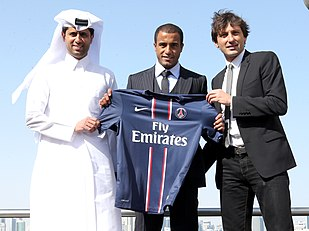

Lucas Rodrigues Moura da Silva nasceu em 3 de agosto de 1992, ás 1h,parto normal,pesando 3,3 kg no Hospital da Alvorada em Santo Amaro em São Paulo.
Filho de Maria Fátima da Silva Moura (ex-atleta e cabelereira profissional) e pai,Jorge Rodrigues (funcionário público).Lucas nasceu e creceu em um fundo cátolico. Seus pais o fizeram frequetar Nossa Senhora Aparecida,em Moema,São Paulo. Está é a mesma igreja em que eles se casaram. (Fotos dos pais abaixo)
De acordo com os requisitos católicos,Lucas foi batizado com 3 anos de idade.
Essa foi a idade que seus pais o matricularam na escola.
Também nessa mesma epóca, ele começou a busca pré-definida para jogar futebol.
Quando Lucas tinha cinco (5) anos,já estava na escola de futebol de Marcelhinho Carioca, onde permaneceu por seis (6) meses.Isso estava de acordo com o plano de seus
pais de fazê-lo mudar de clube para ganhar experiência.
Depois de completar seis (6) anos de idade, os pais o levaram para jogar em um clube chamado "Clube Santa Maria" Em São Caetano do Sul,uma cidade metropolitana de São Paulo.
Como havia muitas crianças com o mesmo nome,Lucas recebeu o apelido de "Marcelinho" , devido sua semelhança com o ex-jogador do Corinthians.
Lucas atou no clube por um ano e meio (1 ano e 6 meses). Neste clube,ele conheceu o técnico Dirceu Gabriel Couto, que ele considera muito importante em sua vida; já que ele foi o seu primeiro mentor e treinador.
Foi o Clube Santa Maria
que deu a ao Lucas seu primeiro trófeu. (Foto abaixo)
Aos sete (e meio) anos de idade,Lucas foi covidado a jogar pela Juventos, um time de futebol da Mocca (distrito de São Paulo).Ele jogou lá por dois (2) anos.
Lucas tinha sete anos na foto abaixo, está junto do time JuventosBelow e o treinador.
Com esse sucesso, Lucas chamou atenção de varios escoteiros de grandes boates brasileiros.
Lucas passou a jogar pelo Corinthians. Logo surgiram alguns problemas.
Ao começar a jogar pelo Corinthians, Lucas foi submetido a duras condições de vida no dia a dia do clube e na gestão peassoal.Tendo que pegar
um onibûs, e dois metrôs para ir ao clube (bem como voltar ao albergue do clube), com essa rotina suas energias foram afetadas, e,
estava quase se tornando insuportavel. Foi quando seus pais decidiram agir.
Como parceiros, Fátima foi cuidar das questões dos esdutos de seu filho, enquanto Jorge foi responsável pelos compromissos relacionados ao futebol.
Até então Lucas era um garoto frágio, e precisava de cuidados especiais como um nutriconista e moradia no clube, os pais ao pedirem isso a gerencia do clube, tiveram seu pedido negado.
Com isso, seus pais decidiram tirar o menino do clube.
Com o fim do acordo com o Corinthians, o São Paulo FC entrou em contato com Jorge (pai de Lucas) e convidou-o para visitar o Centro de treinamneto em Cotia (pequena cidade de São Paulo, localizada há 46,9 quilometros da capital).Jorge relata
que gostou do que viu e decidiu levar Lucas para clube,mesmo porque seria favorável a ele na rotina diária e de seus estudos e treinamento.Lucas tinha quase
14 anos e permaneceu lá até seus 18 anos.
Em oposição ao tratamento que recebeu no Corinthians, o São Paulo FC deu a Lucas todas as condições adequadas para o desenvolvimento pessoal e profissional dando todo apoio necessario,
Os resultados foram quase imediatos, o menino creceu mais forte e seu futebol melhorou consideravelmente.A conveniência oferecida pelo São Paulo, para tranportá-lo para a escola, bem como as acomodações no mesmo local de treinamento significaram muito menos desgaste fisico, e Lucas poderia render muito mais em seus exercicios e jogos.
O clube não demorou muito para ver benefícios de seu investimentos no jogador. Em 2010, Lucas se tornou campeão da Copa São Paulo, e foi o destaque da competição
Foi nesse momento que Lucas se incomodou de ser chamado de "Marcelinho", ele disse uma vez "Não quero ser comparado a ninguém,eu quero ter a minha própria historia no mundo do futebol", e em 16 de setembro de 2010,o nome Marcelinho deixou de existir e nasceu a estrela de futebol Lucas, agora conhecido como
"Lucas do São Paulo" , infelizmente foi em uma noite terrível para o grupo,já que fora derrotados de 1-3.
A renovação do seu contrato com o São Paulo FC foi em 2011, e vai até o final de 2015.
Sua primeira grande competiçao no Brasi, foi o campeonato sul-americano, que ocorreu em 20 de janeiro de 2011, que o Brasil ganhou, ele foi um dos principais
jogadores de dessa equipe ao lado de Neymar.
Seu primeiro jogo no profissional foi contra o Atlético Paranaense na Arena da Baixada no dia 8 de agosto de 2010, ele entrou no decorrer da partida, que terminou empatada.
Lucas foi titular pela primeira vez no jogo contra o Vasco da Gama, no dia 25 de agosto de 2010 no Morumbi.Após uma otima estreia, e de um otimo ano, a FIFA citou o jogador como uma das
principais revelações do ano.
Em 2011 Lucas teve uma temporada muito proveitosa, marcou 9 gols durante o campeonato Brasileiro se tornou uma das principais armas ofencivas ao lado de Luís Fabiano.
E naquele mesmo ano Lucas atingiu sua marca de 100 gols com a camisa tricolor.
Em 2012 lucas marcou seu primeiro hat-trick (Um triplete, também conhecido pelo seu nome em inglês: hat-trick, é associado com alguma coisa que ocorre sucessivamente três vezes, geralmente de modo consecutivo, em algum esporte.) naquele jogou o São Paulo bateu a equipe Pernambucana por 4-2.
Em 12 dezembro de 2012, Lucas fez seu ultimo jogo pelo São Paulo, no jogo, Lucas marcou um gol e deu assitência para o segundo gol do São Paulo na partida, a vitoria foi em cima do clube Tigres da Argentina
na final da copa sul-americana onde seu time sagrou-se campeão.
Enquanto Lucas participava das Olimpíadas, seus gerentes conversavam com o Paris Saint-German (PSG) sobre sua transferência para o time francês.
Em oito (8) de agosto de 2012 Lucas foi vendido ao Paris Saint-German por 43 milhões de euros (108,34 milhões de reais).
Lucas atou no clube francês nas temporadas de 2013, 2014-15, 2016, e 2017.

No dia 12 de Maio, o PSG venceu o Lyon e conquistou o Campeonato Francês, sendo o primeiro título de Lucas no clube parisiense.
Em 31 de janeiro de 2018, foi anunciado como novo jogador do Tottenham, assinando contrato até 2023. Estreou em 13 de fevereiro, entrando nos minutos finais no empate em 2–2 com a Juventus, partida de ida das oitavas de final da Liga dos Campeões.
Quantidade de jogos e gols, e titulos
Larisa Saad é a linda moça por trás da vida amorosa e da história de amor da vida de Lucas Moura. Ela é administradora de empresas,
top modelo brasileira e uma grande usuária do Instagram conhecida por postar selfies cheios de estilo dela famália e amigos, ela conta com 204 mil seguidores atualmente.
Lucas Moura e Larisa Saad são paulistas, eles se conheceram em Paris um ano após a chegada do Lucas no PSG. Antes de começarem a namorar, Larisa "driblou" Lucas
por mais de 1 anos, tudo isso pois a familia de Larisa tinha muitas restições pelo fato de Lucas ser jogador de futebol, mas mesmo com esse "obstaculo" Lucas não desistiu e levou cerca de 9 meses para ter aprovação da mãe de Larissa.
O dia mais importante da vida deles foi em 23 de dezembro de 2016, finalmente Lucas se casou com sua amada Larisa.
Nas palavras de Lucas:"É uma emoção diferente de tudo que eu já senti,um turbilhão de emoções.Nunca vou passar por tanto na minha vida, nem na final de um jogo.
Eu não tenho dormido. Tenho estado inquieto e ansioso por uma semana."
Era certo que Lucas tinha planos de começar a ter filhos. E não demorou muito para Larisa engravidar pela primeira vez, no nascimento de seu primeiro filho, ele esteve para testemunhar, isso ocorreu no dia 13 de novembro de 2017. Larisa deu a luz a um lindo menino chamado Miguel.
Em março de 2019 Larisa ja estava aguardando o segundo filho do casal, Pedro chegou ao mundo no dia 09 de setembro de 2019.
Hoje Lucas e Larisa acompanham o crecimento de seus filhos Miguel e Pedro e em suas redes sociais demonstram muita feliciadade com as fotos em familia.